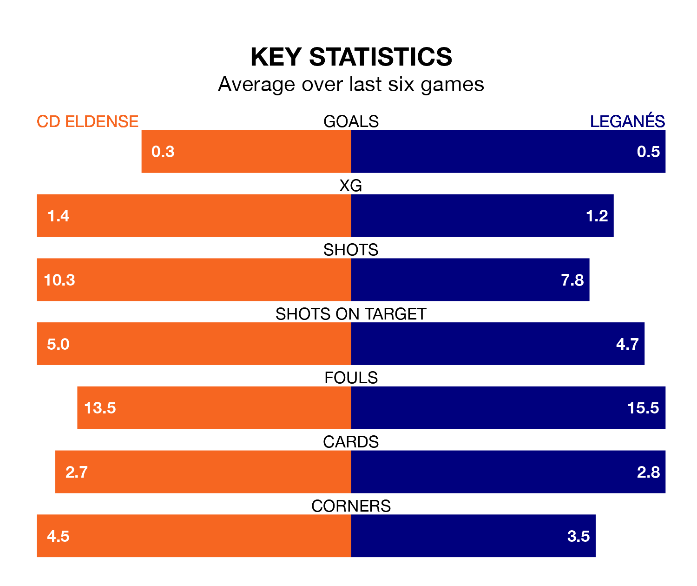

CD Eldense are on a terrible run ahead of hosting Leganés at the Estadio Municipal Nuevo Pepico Amat on Sunday, with just one point collected from their last six games.
Eldense have picked up just one draw in their last six Segunda División games, and face a Leganés side whose last six games have brought one win and five draws.
Leganés are top of the table after 37 games, of which they have won 17 and drawn 13, earning 64 points.
Eldense are 15 places behind the visitors in 16th, with 10 wins and 13 draws putting them on 43 points.
With 48 goals in 37 games so far this season, Leganés are scoring more than average in the league with 1.3 goals per game. And they are conceding fewer than average, letting in 22 goals at a rate of 0.6 per game.
The home side, meanwhile, are average scorers, with 1.1 goals per game. They have conceded 1.4 goals per game.
With Diego Conde between the sticks, Leganés can rely on one of the league's safest pair of hands. He has kept 18 clean sheets in his 35 appearances this season, and no 'keeper has prevented the opposition scoring more often in the Segunda División.
In Eldense's net, Andoni Zubiaurre has three clean sheets in 10 games. He has conceded a goal every 90 minutes, 80% more often than the 162 minutes between goals for Conde Alcolado.
Eldense's last match was on April 28, a 0-0 draw against AD Alcorcón.
Leganés drew 1-1 with Real Zaragoza last time out, on April 27, with Miguel De La Fuente Escudero on the scoresheet.
Updated: 12:00 (UTC), 02/05/24